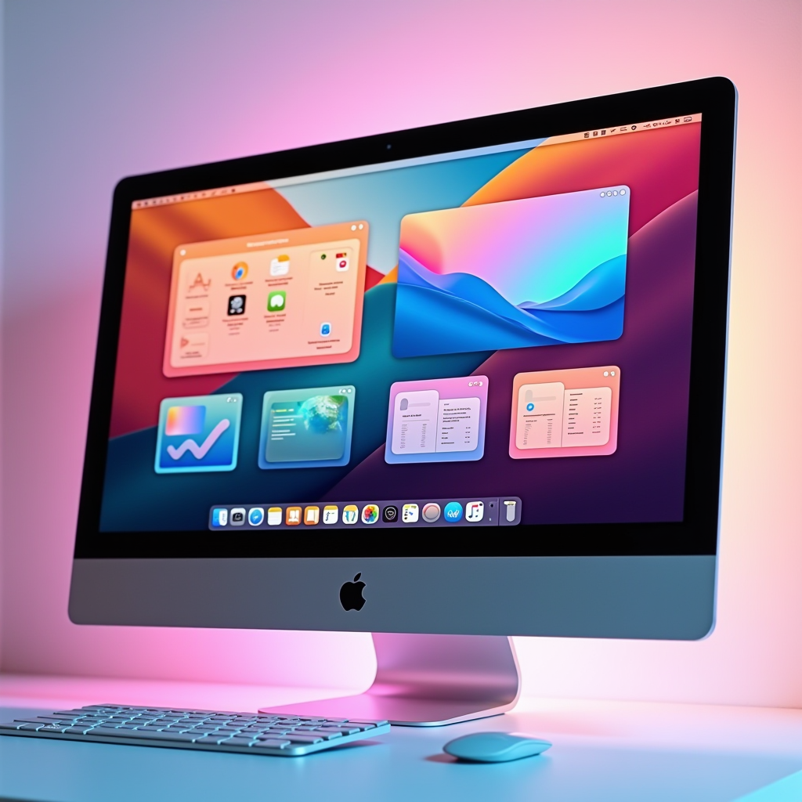

Apple's Latest macOS Update: Revolutionary Window Management for Enhanced Productivity
Apple has unveiled a groundbreaking macOS update that transforms how Mac users organize and manage their workspace. The new window snapping and organization tools represent the most significant productivity enhancement in years, bringing sophisticated multitasking capabilities that rival and exceed competing platforms.

Understanding the New Window Snapping System
The cornerstone of this update is an intelligent window snapping system that fundamentally changes how users interact with multiple applications. Unlike previous versions of macOS that required manual window resizing and positioning, the new system introduces intuitive snap zones that automatically detect when a window is being dragged near screen edges or corners. This feature addresses one of the most common pain points for Mac users who frequently work with multiple applications simultaneously.
When you drag a window to the top of your screen, a visual overlay appears showing available layout options. You can choose from half-screen splits, quarter-screen arrangements, or even thirds for those who need more granular control. The system remembers your preferences and learns from your usage patterns, making suggestions for optimal window arrangements based on the applications you're using. This intelligent approach means that over time, your Mac becomes better at predicting how you want to organize your workspace.
The snap zones are highly customizable, allowing users to define their own preferred layouts. Power users can create complex multi-window arrangements and save them as templates for quick access. This is particularly valuable for professionals who switch between different types of work throughout the day. A developer might have one layout for coding with their IDE, terminal, and documentation side by side, while a designer might prefer a different arrangement with design tools, reference images, and communication apps.
What sets Apple's implementation apart is the attention to detail in the animations and transitions. Windows glide smoothly into position with subtle elastic effects that feel natural and responsive. The system maintains the Mac's signature polish while adding functionality that users have been requesting for years. Every interaction feels intentional and refined, from the moment you start dragging a window to when it settles into its final position.
Enhanced Mission Control: A Complete Workspace Overview
Mission Control has received a comprehensive overhaul that transforms it from a simple window overview into a powerful workspace management tool. The new interface provides a bird's-eye view of all your open applications, windows, and virtual desktops with unprecedented clarity. Each window is displayed as a high-resolution thumbnail that updates in real-time, allowing you to see exactly what's happening in each application without switching to it.
The redesigned Mission Control introduces smart grouping that automatically organizes windows by application, project, or custom criteria you define. This means you can quickly locate the specific window you need among dozens of open applications. The search functionality has been enhanced to include content within windows, so you can find that specific document or browser tab even if you can't remember which window it's in. This feature alone can save hours of time for users who work with numerous files and applications throughout the day.
Virtual desktop management has been significantly improved with the ability to create unlimited spaces and organize them in ways that make sense for your workflow. You can now name your spaces, assign custom colors or icons, and even set different wallpapers for each one to provide visual context. The transition between spaces is smoother than ever, with fluid animations that maintain spatial awareness so you always know where you are in your workspace hierarchy.
A particularly innovative feature is the ability to create space templates that can be launched with a single click. Imagine starting your workday and having all your essential applications automatically open and arrange themselves in your preferred layout across multiple virtual desktops. This level of automation was previously only possible through third-party tools, but Apple has integrated it seamlessly into the operating system with their characteristic attention to user experience.
Customizable Window Layouts for Every Workflow
The new layout system goes far beyond simple window snapping. Apple has introduced a sophisticated framework that allows users to create and save custom window arrangements tailored to specific tasks or projects. These layouts can include not just window positions and sizes, but also which applications should be open, what files should be loaded, and even specific settings for each application. This holistic approach to workspace management represents a significant leap forward in productivity tools.
Users can create layouts for different scenarios: one for video editing with timeline, preview, and effects panels optimally arranged; another for writing with research materials, document editor, and reference tools positioned for maximum efficiency; and yet another for communication-heavy work with email, messaging apps, and calendar visible simultaneously. The system supports an unlimited number of saved layouts, and switching between them is instantaneous.
The layout engine is intelligent enough to adapt to different screen sizes and configurations. If you create a layout on your 27-inch iMac and then switch to working on a MacBook Pro, the system automatically adjusts the arrangement to fit the smaller screen while maintaining the relative positioning and proportions of your windows. This flexibility is crucial for users who work across multiple devices or frequently connect to external displays.
Keyboard shortcuts have been expanded to give power users even more control. You can quickly cycle through saved layouts, move windows between displays, or adjust window sizes without touching the mouse. These shortcuts are customizable and can be combined with existing macOS keyboard commands to create powerful workflow automations. For users who prefer keyboard-driven interfaces, this update brings Mac window management to a new level of efficiency.
Productivity Improvements for Multi-Application Workflows
The real power of these new features becomes apparent when working with multiple applications simultaneously. Apple has optimized the system to handle complex multitasking scenarios with grace and efficiency. Window switching is faster, application launching is more responsive, and the overall system remains smooth even with dozens of windows open across multiple virtual desktops. This performance optimization ensures that the new features enhance rather than hinder productivity.
A new feature called Focus Layouts automatically adjusts your workspace based on your current Focus mode. When you activate Work focus, your saved work layout loads automatically. Switch to Personal focus, and your workspace transforms to show personal applications and files. This integration between Focus modes and window management creates a seamless experience that helps maintain boundaries between different aspects of your life while maximizing efficiency in each context.
The update also introduces improved window previews when hovering over application icons in the Dock. These previews are larger, more detailed, and include quick actions that let you perform common tasks without fully switching to the application. You can respond to a message, mark an email as read, or pause a video directly from the preview, reducing the constant context switching that can fragment attention and reduce productivity.
For users working with external displays, the update brings significant improvements to multi-monitor workflows. Each display can have its own set of virtual desktops, and windows can be easily moved between displays with improved snap zones that work across monitor boundaries. The system remembers which windows belong on which display, so when you disconnect and reconnect external monitors, everything returns to where it should be without manual rearrangement.
Integration with Existing macOS Features
Apple has ensured that these new window management features integrate seamlessly with existing macOS capabilities. Stage Manager, introduced in a previous update, now works in harmony with the new snapping system, allowing users to combine both approaches based on their preferences. You can use Stage Manager for some tasks while employing traditional window management for others, and the system handles the transition between these modes intelligently.
Spotlight search has been enhanced to include window and layout management. You can search for specific windows by content, quickly switch to saved layouts by name, or even search for windows that contain specific types of content. This makes finding and organizing your workspace as simple as typing a few characters, further reducing the friction in managing complex multitasking scenarios.
The new features also work beautifully with Continuity features like Handoff and Universal Control. You can start arranging windows on your Mac and continue the process on your iPad, or use your iPad as an additional display with full support for the new window management features. This cross-device integration exemplifies Apple's ecosystem approach, where features work better together than they would in isolation.
Accessibility features have been thoughtfully integrated throughout the new window management system. Voice Control can be used to arrange windows, create layouts, and navigate between spaces. The system works seamlessly with VoiceOver, providing clear audio feedback about window positions and available actions. These accessibility considerations ensure that the productivity benefits of the update are available to all users, regardless of how they interact with their Mac.
Looking Forward: The Future of Mac Productivity
This update represents more than just new features; it signals Apple's commitment to making the Mac the most productive platform for professional work. The attention to detail, performance optimization, and thoughtful integration of features demonstrate that Apple understands the needs of users who rely on their Macs for demanding multitasking workflows. The company has taken feedback from years of user requests and third-party solutions and distilled them into a cohesive, polished system that feels distinctly Apple.
The foundation laid by this update opens possibilities for future enhancements. Machine learning could further improve layout suggestions based on usage patterns. Integration with Apple Intelligence could enable natural language commands for window management. The potential for automation and customization is vast, and this update provides the framework for continued innovation in how we interact with our digital workspaces.
For Mac users who have long envied certain window management features on other platforms, this update is a game-changer. Apple hasn't simply copied what others have done; they've reimagined window management in a way that feels native to macOS while pushing the boundaries of what's possible. The result is a system that's both powerful for advanced users and approachable for those new to sophisticated window management.
As users begin to explore and adopt these new features, we're likely to see a shift in how people think about organizing their digital workspace. The ability to create, save, and instantly switch between complex window arrangements will change workflows and enable new ways of working. This macOS update doesn't just add features; it fundamentally enhances the Mac experience for anyone who works with multiple applications, making the platform more capable and efficient than ever before.